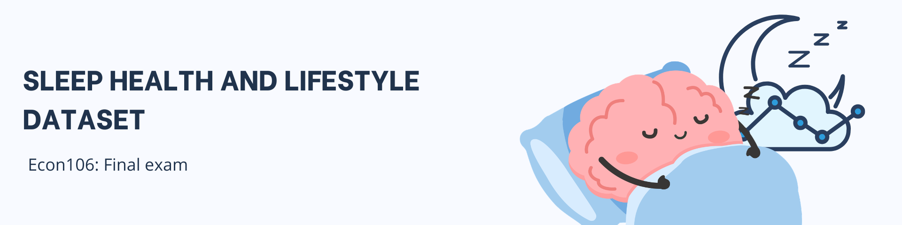

Sleep health and lifestyle dataset
For this exam, you will be working with the Sleep Health and Lifestyle dataset. This dataset contains information about individuals’ sleep habits, lifestyle factors, and health indicators. Download the dataset using this link. Each row represents one person, with the following variables:
| Variable Name | Description |
|---|---|
| Person ID | Unique identifier for each individual |
| Gender | Gender of the person (Male/Female) |
| Age | Age in years |
| Occupation | Profession of the individual |
| Sleep Duration (hours) | Average daily sleep duration in hours |
| Quality of Sleep (1–10) | Subjective rating of sleep quality (scale from 1 to 10) |
| Physical Activity Level | Daily minutes of physical activity |
| Stress Level (1–10) | Subjective rating of stress level (scale from 1 to 10) |
| BMI Category | BMI classification (Underweight, Normal, Overweight, Obese) |
| Blood Pressure | Blood pressure measurement (systolic/diastolic) |
| Heart Rate (bpm) | Resting heart rate in beats per minute |
| Daily Steps | Number of steps taken per day |
| Sleep Disorder | Presence or absence of a sleep disorder (None, Insomnia, Sleep Apnea) |
Instructions
- Answer all 30 questions on the test paper provided by writing the final numeric or text result.
- For each question, write the R code you used in a separate file named exam_answers.R.
- Use tidyverse functions (
dplyr:summarise(),group_by(),filter(),mutate()) for all answers. - Once done, submit a copy of the R script file (exam_answers.R) you used to derive the answer using this link
Exam preparation tips
What to expect?
- The exam will ask descriptive questions only (averages, medians, counts, proportions, group summaries).
- You will write the numeric/text answers on paper.
- You will also submit an R script (exam_answers.R) containing the code you used to derive those answers.
- All answers must use tidyverse functions (dplyr).
Common Question Types
- Overall summaries
- Average sleep duration across all individuals.
- Median sleep duration.
- Maximum/minimum values.
- Grouped summaries
- Average sleep duration by occupation.
- Average quality of sleep by gender.
- Count of individuals by BMI category.
- Filtered summaries
- Average heart rate of individuals with insomnia.
- Number of individuals with stress level > 7.
- Derived variables
- Average systolic blood pressure (extract from “Blood Pressure”).
- Average sleep duration by age group (Below 30, 30–40, Above 40).
- Average sleep duration by stress level category (Low, Medium, High).
Functions to Review
Make sure you are comfortable with these core functions in R (tidyverse/dplyr):
| Function | Purpose |
|---|---|
summarise() |
Compute summary statistics (mean, median, max, min, count, proportion). |
group_by() |
Group data by a variable (e.g., Occupation, Gender, BMI Category). |
filter() |
Select rows that meet a condition (e.g., Stress Level > 7). |
mutate() |
Create new variables (e.g., extract systolic/diastolic from Blood Pressure, create Age Groups). |
n() |
Count the number of rows in a group. |
mean(), median(), max(), min() |
Basic descriptive statistics. |
case_when() |
Create categories (e.g., Stress Level → Low, Medium, High). |